01
Introduction
Dipsakus is a hiking club that brings people together through outdoor activities and hiking trips. The goal of this project was to create a website where both existing members and people interested in joining the club could easily find information about upcoming hikes, past trips, club news and other useful resources.
I wanted to make it easier for people to learn about the club, explore its activities and find everything they need before joining a hike.
02
My Role
This was a personal project that I worked on together with my brother, Krstan Popeski, who is a software engineer.
I was responsible for UX design and frontend development. I worked on the research, wireframes, visual design and implementation of the website using Next.js and Tailwind CSS.
Krstan worked on the backend, including the server side structure, database and main functionality. We worked together throughout the project, combining our skills to bring the website to life.
Main Tasks
- User research and competitor analysis
- User personas and journey mapping
- Wireframing and prototyping
- UI design
- Frontend development with Next.js and Tailwind CSS
- Responsive design
03
Design Process: Double Diamond
I used the Double Diamond process to guide the project, from understanding the users and defining the main problems to exploring ideas and building the final website.
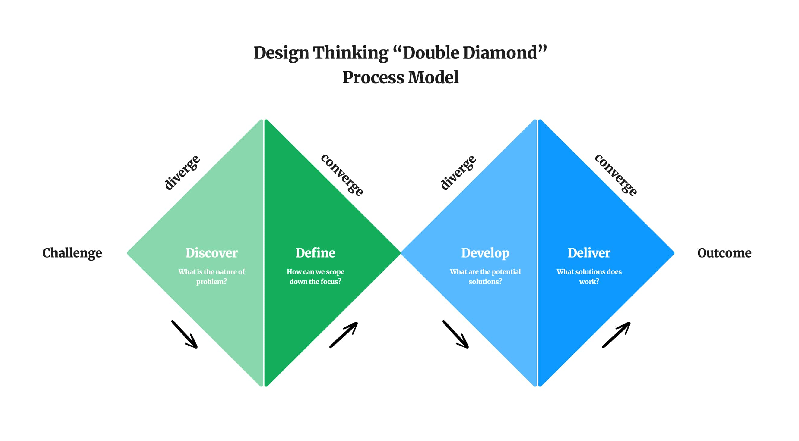
04
Discover: Understanding the Users
I started by researching hiking communities and looking into how people find and choose hiking trips. I wanted to understand what information they look for, what makes them feel comfortable joining a group and what could make the experience easier.
SWOT Analysis
I used a SWOT analysis to look at the strengths and weaknesses of the existing experience, as well as possible opportunities and challenges for the website.
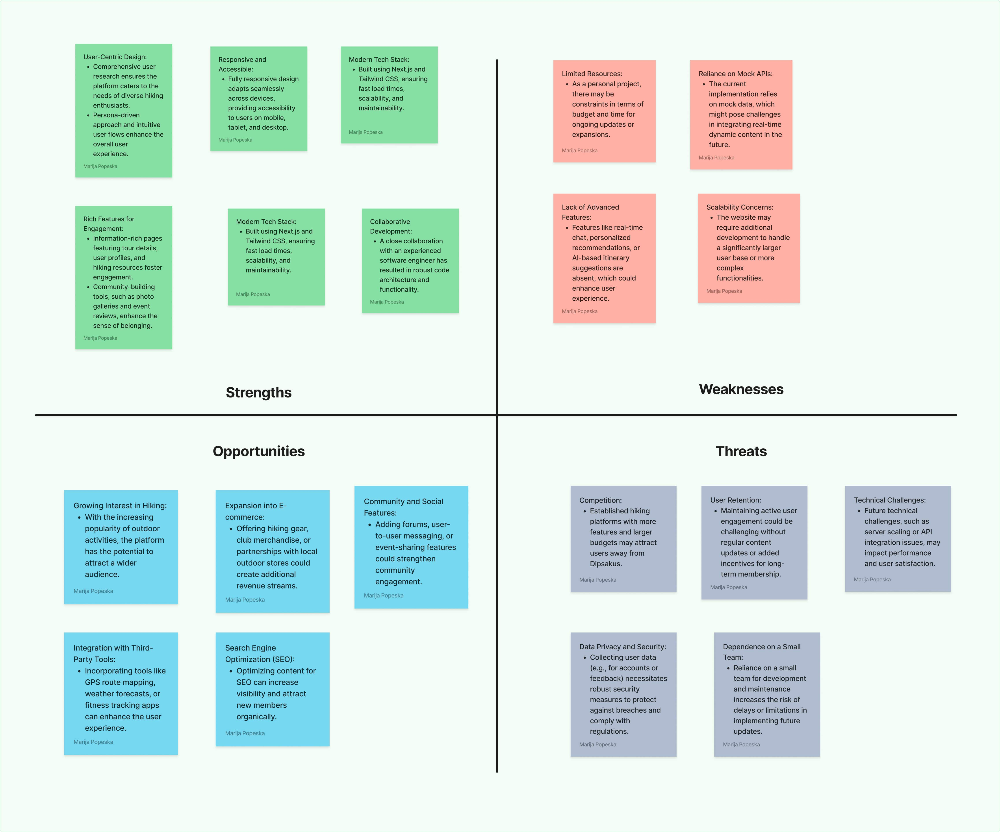
Competitor Analysis
I explored other hiking and outdoor platforms to see how they present trips, organize information and communicate with their communities. This helped me identify useful ideas and areas where the Dipsakus website could offer a better experience.
User Interviews
I spoke with potential users to learn more about their hiking habits, how they discover new trips and what information they need before taking part in an activity.


Empathy Mapping
I used empathy maps to organize the insights from my research and get a better understanding of what users think, feel and expect when looking for a hiking experience.

05
Research Insights
A few important themes came up during the research:
Finding the right hike
People want to know how difficult a trip is and whether it suits their experience and fitness level.
Clear information
Details about dates, locations, routes and what to bring should be easy to find.
A sense of community
For many people, hiking is also about meeting others and sharing experiences.
Support for beginners
People who are new to hiking may need more information and reassurance before joining a group.
Easy access on mobile
Users often look for information on their phones, so the website needs to work well on smaller screens.
These findings helped me understand what the website should focus on and what information needed to be most visible.
06
Define: Identifying the Main Needs
After reviewing the research, I organized the findings and focused on the main needs of the users.
User Personas
I created user personas based on the research to represent different types of people who might visit the website. They helped me keep their goals, expectations and challenges in mind during the design process.
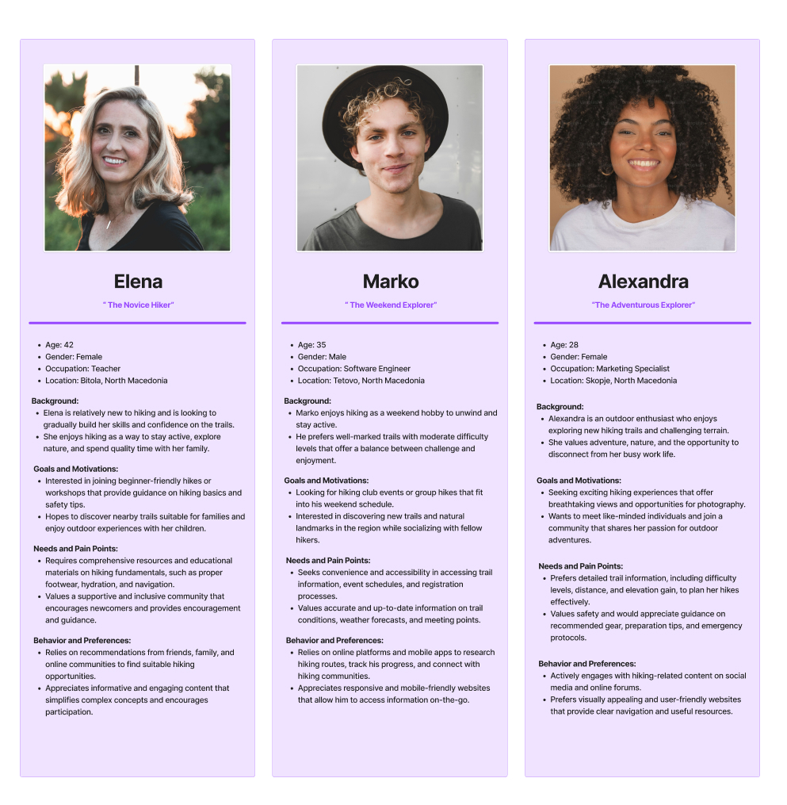
User Journey Map
I mapped the user journey, from first discovering the Dipsakus club to exploring its activities and deciding to join a hiking trip. This helped me identify the information users need at each step and where the experience could be improved.
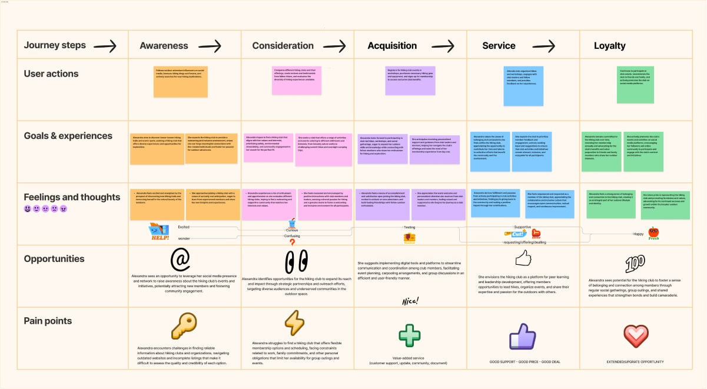
07
Develop: Exploring Ideas
With a clearer understanding of the users and their needs, I started exploring different ways to organize the website and present its content.
Brainstorming and Flowcharts
I explored ideas for the website's structure and navigation, then created flowcharts to map out how users would move between pages and find the information they needed.
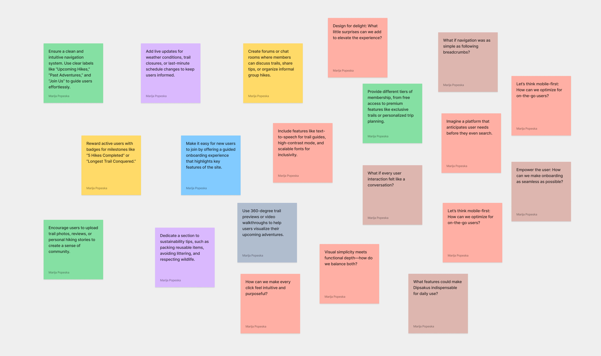

Sketching
I started with simple sketches to explore different layouts and decide where the main content and features should be placed before moving into digital wireframes.
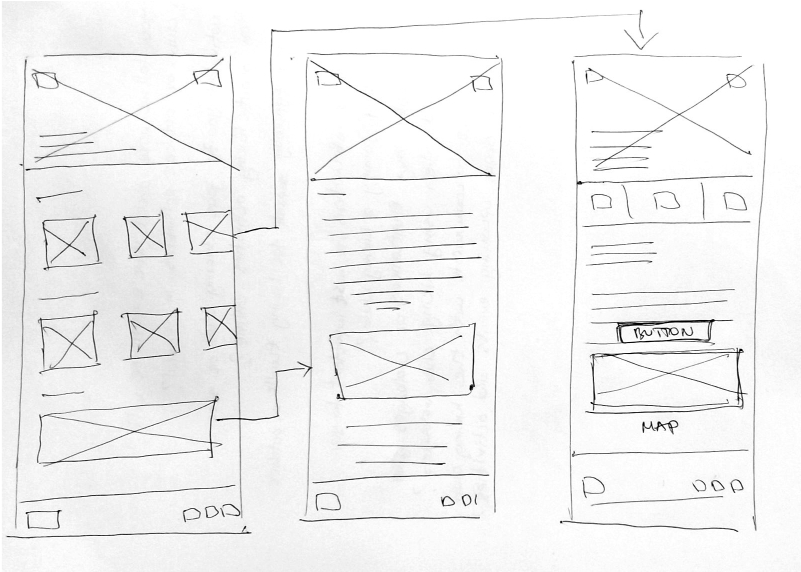
Wireframes and Prototypes
I created wireframes to define the page structure, content hierarchy and main user flows. I then developed the designs into more detailed prototypes and reviewed them to see whether the navigation and layout were clear.
I also gathered feedback and used it to make improvements, focusing on questions such as:
- Can users find the information they need?
- Is the navigation clear?
- Does the layout make sense?
- What could be improved?
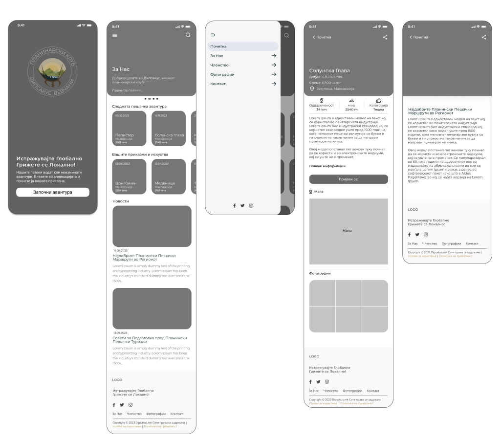
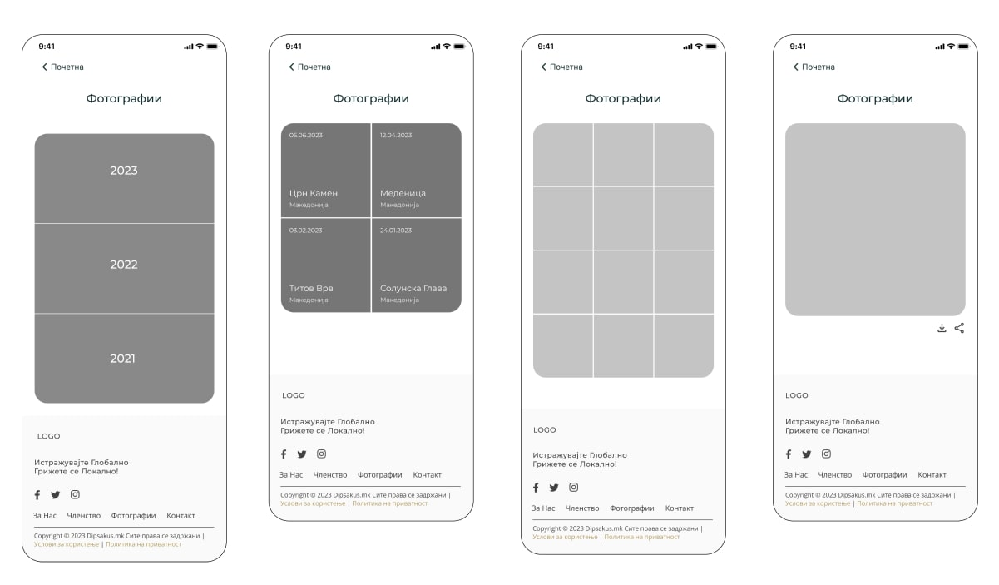
08
Deliver: Final Design and Development
After exploring and refining the ideas, I moved on to the final design and frontend development.
I designed the website to work across different screen sizes, with a focus on keeping the content clear and easy to browse. I used cards to present information such as hiking trips and club news, making important details easy to scan.
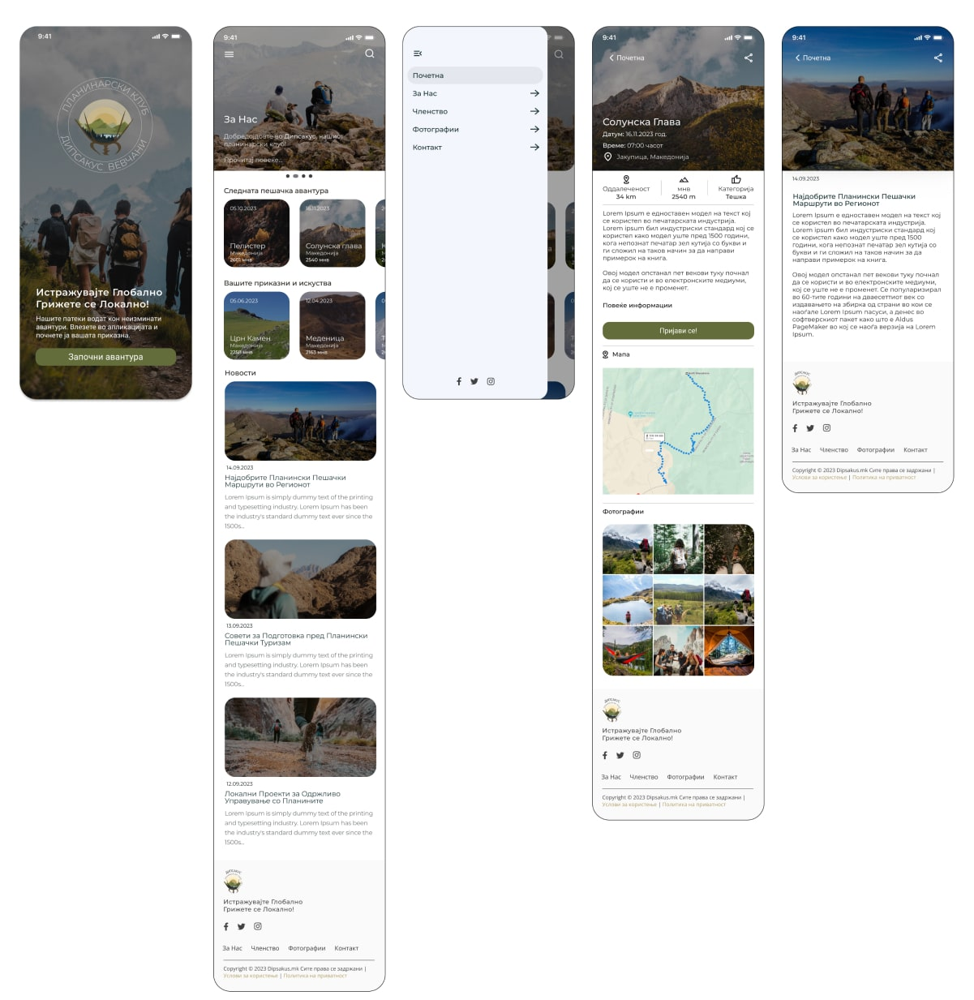
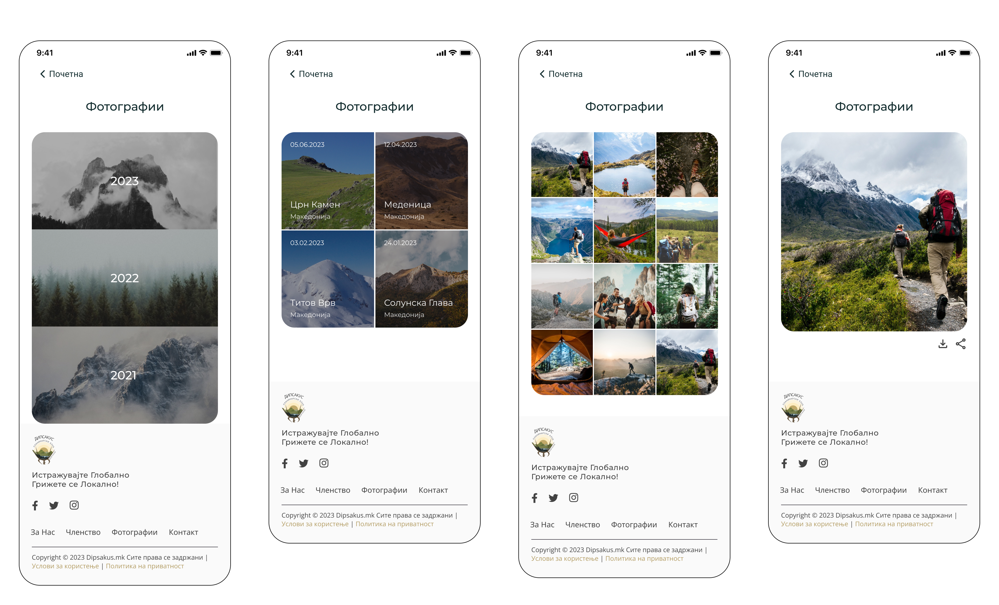
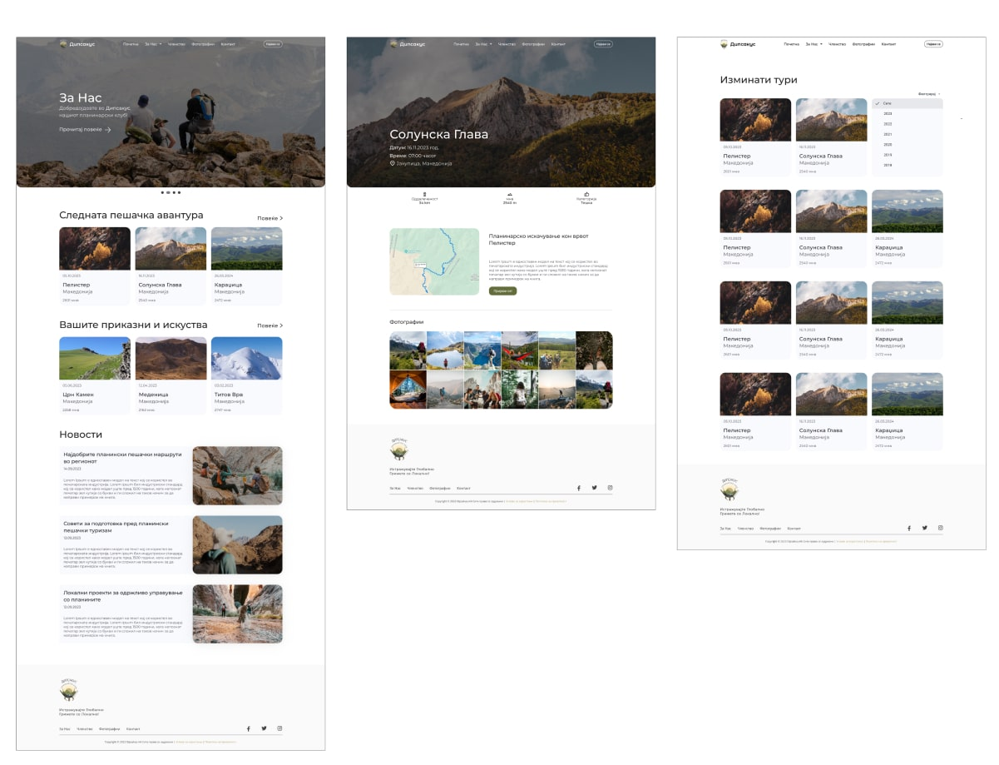
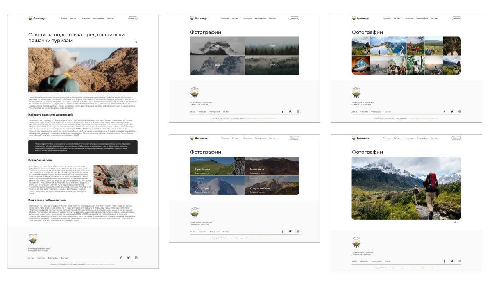
Frontend Development
I translated the designs and wireframes into working pages and components using Next.js and Tailwind CSS.
My work included setting up the project structure and routing, building reusable components, creating responsive layouts and adding interactive elements. I also connected the frontend to mock API data and focused on keeping the website organized and easy to use.
Throughout development, I worked closely with Krstan, who handled the backend. We discussed the technical details, worked through challenges and made sure the different parts of the website came together.
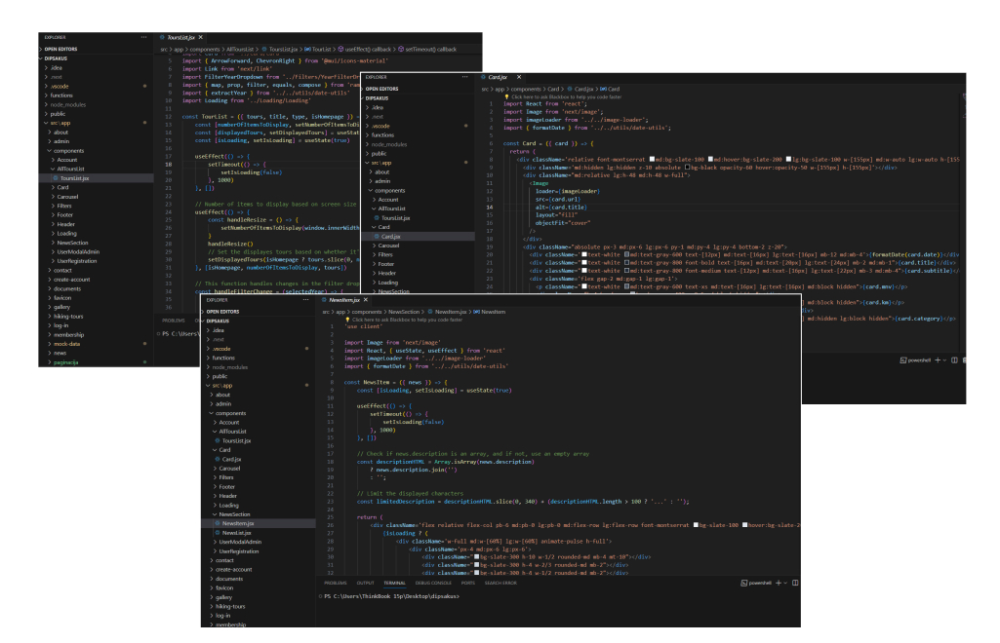
09
Final Design
The final result is a website that gives the Dipsakus hiking club a place to share its activities and connect with people interested in hiking.
The website brings together information about upcoming trips, past experiences and club news in one place, making it easier for visitors to explore the club and find the details they need.
Technologies
- Next.js
- Tailwind CSS